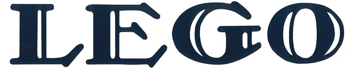
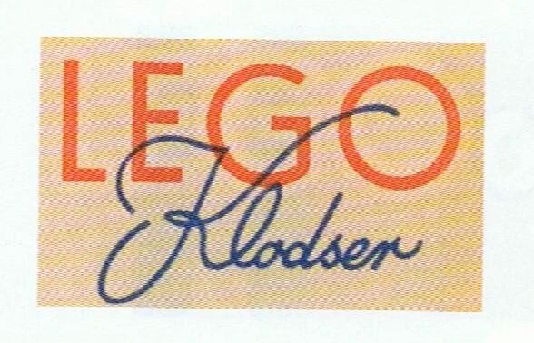
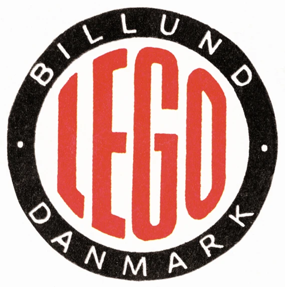
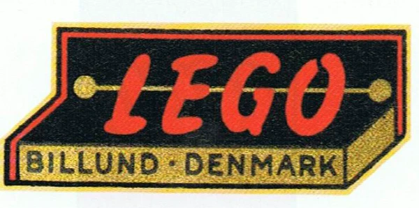
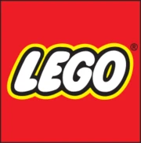
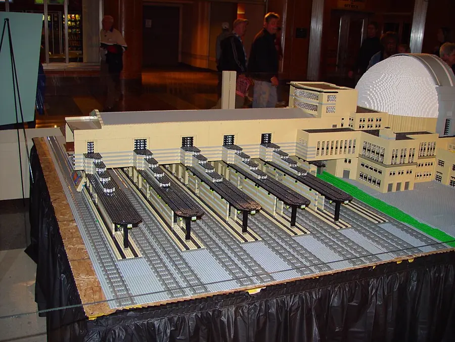

레고 그룹 The Lego Group
레고 그룹(The Lego Group)은 덴마크 빌룬에 본사를 둔 브릭 제품 기업이다. 레고 브랜드로 잘 알려져 있으며, 1932년 올레 키르크 크리스티안센이 창업한 가족 기업이다.
최종 업데이트

레고 그룹은 어떤 브랜드인가
레고 그룹은 덴마크 빌룬에 본사를 둔 브릭 제품 기업으로, 가족 기업으로서 경영되고 있으며 레고 브랜드로 유명하다. 회사 이름 레고(LEGO)는 '잘 놀다'를 뜻하는 덴마크어 'LEg GOdt'에서 왔다.
처음에는 나무 장난감을 생산했으며, 나중에 블록 조립 시스템을 개발했다. 브릭 제품이 큰 인기를 끌자 이를 활용한 테마파크인 레고랜드도 지어졌다.
1989년 마지막 특허가 만료된 이후 옥스포드, 메가블럭, 베스트락 같은 경쟁 제품이 등장했으며, 레고는 미국에서 부여받은 600개 이상의 디자인 특허를 보유하고 있다. 또한 로봇 시스템 마인드스톰의 해킹 사례를 계기로 소비자 주도 혁신을 정책적으로 실천했고, 이를 통해 더욱 성장할 수 있었다.
레고 그룹은 어떻게 시작되고 성장했나
레고 그룹의 브랜드 아이덴티티는 무엇인가
소비자 주도 혁신을 정책적으로 실천하고 특허 출원에 적극 대응해 온, 덴마크의 가족 경영 브릭 제품 기업이다.
레고 그룹의 대표 제품과 서비스는 무엇인가
대표 제품은 레고 브릭 제품이며, 그 출발점은 오토매틱 바인딩 브릭이다. 브릭 제품의 인기에 힘입어 테마파크인 레고랜드가 지어졌다.
로봇 시스템 마인드스톰도 출시했는데, 제품을 구매한 해커들이 프로그램을 마음대로 해킹하자 회사는 한때 소송까지 고려했으나 이를 용인했다. 회사는 이를 고객이 원하는 것을 적극 반영하는 관점에서 받아들였다.
마인드스톰은 사용자 집단 모임의 적극적인 참여를 통해 제품 디자인과 프로그래밍 등을 발전시키며 성공을 이루었다.
레고 그룹은 지금 어떤 상태인가
레고 그룹은 덴마크 빌룬에 본사를 두고 있으며, 모기업은 Kirkbi이고 가족 기업으로서 경영 중이다. 1998년부터 현재까지 사용해 온 로고를 쓰고 있다.
유사 제품과의 치열한 경쟁 속에서 특허 출원에 적극 대응해 왔으며, 미국에서 부여받은 600개 이상의 디자인 특허를 보유하고 있다. 1989년 마지막 특허가 만료된 뒤에는 호환 가능하고 더 저렴한 경쟁 제품들과 경쟁하고 있다.
레고 그룹 로고는 어떻게 변해왔나

1934–1936
1946–1950
1950–1954
1954–1972
1972–2015
2023–현재
시기는 위키데이터 로고 기간 또는 위키미디어 커먼즈 파일 정보 기준입니다. 이미지를 누르면 원본 파일과 라이선스를 볼 수 있습니다.
사진으로 보는 레고 그룹의 역사

자주 묻는 질문
레고 그룹는 어느 나라 브랜드인가요?
레고 그룹는 덴마크의 미디어·엔터테인먼트 브랜드입니다.
레고 그룹는 언제 설립되었나요?
레고 그룹는 1932년 설립되었습니다.
레고 그룹의 브랜드 아이덴티티는 무엇인가요?
소비자 주도 혁신을 정책적으로 실천하고 특허 출원에 적극 대응해 온, 덴마크의 가족 경영 브릭 제품 기업이다.
레고 그룹의 대표 제품은 무엇인가요?
대표 제품은 레고 브릭 제품이며, 그 출발점은 오토매틱 바인딩 브릭이다.
레고 그룹는 어느 기업이 소유하고 있나요?
레고 그룹은 덴마크 빌룬에 본사를 두고 있으며, 모기업은 Kirkbi이고 가족 기업으로서 경영 중이다.
레고 그룹의 창업자는 누구인가요?
레고 그룹의 창업자는 올레 키르크 크리스티얀센입니다(위키데이터 기준).
레고 그룹의 본사는 어디에 있나요?
레고 그룹의 본사는 빌룬에 있습니다(위키데이터 기준).
출처와 검증
레고 그룹 관련 참고: 공식 웹사이트 · 위키데이터 Q1063455 · 한국어 위키백과 · 영어 위키백과. 브랜드명은 한글과 원어를 함께 표기하되 데이터에 없는 표기는 만들지 않습니다. 기원 국가·설립연도는 검수된 정의문에서 확인된 값을 우선하고, 없을 때만 공식 웹사이트 URL이 일치하는 위키데이터 개체의 값을 씁니다. 탄생일의 월·일은 위키데이터, 위키백과 정보상자, 본문 가운데 같은 연월로 확인되는 값만 싣고, 출처끼리 다르면 싣지 않습니다. 위키데이터 값은 2026-11-11 기준입니다.